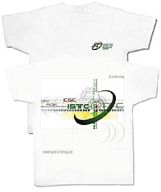
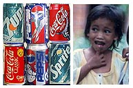
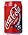

|
Team
Building Committee : Updates
ISTC
T-Shirt Souvenir
by
Joel Kisteria
Just
as promised, the TBC made sure that the ISTC souvenir Tshirt
will be given to "ISTPs" before Christmas breaks. And true
to that, the Tshirt was distributed last December 22 y2k.
The
TBC made it sort of a "gift" for all of us. You may wear them
to symbolize the evolution of this now so-called Information
Technology Center of DLS-PSI.
Just
watch out for the ITC polo shirt. Though this time, it might
no longer be a 'gift item" for free. Anyway, it will be a
polo shirt common for all ITCenters of system schools.
Keep
on supporting TBC kool gigs & activities, the TGIF, the La
Salle System School Sports Fest and the upcoming TeamBuilding
and Outing summer get-aways this coming April 2001..BE THERE
& BE COUNTED (parang election ah!)
ITC
Y2K PartyOn
(The
Christmas Party)
By
System Management Office
On the
late afternoon of the 21st day of December y2k, the proud
bunch of ITPs went to this little cool place called "Kamayan
Restaurant" somewhere in the little cool town of Malate to
have a big cool Christmas celebration...
...and
so the story was.
the trip
to "Kamayan Restaurant" on that cool early evening of 21 Dec
y2k was initiated by the Komites de Paskos. Hoping to make
the partyOn a really a worthwhile event, the Komites started
it all with a couple of raffles.
Then later
the group presentation were held. Right at that restaurant,
the ITPs showed their talents. The 70's group had a long presentation
covering the entire decade citing its highlights.
Including
in their gimik was TV shows, celebrities & personalities and
event plus the Martial Law. Salu-salo followed (wantusawa
ang bogtsi). Then it was the 80's that was represented, and
oh-mi-gosh!!! The wave dance craze allowed Mama Cata & Mang
Nick to put-on their dancing shoes!!!
The Millennium
group showed a love story that won for Jun "the cat" Galang
a "best actor award" for playing "Michael the lover". And
there were plenty of raffles that gave trip prizes. "Trip
to anywhere inside the campus". Syempre, the Komites also
showed what their made of, by rendering an dance interpretation
of the mind-boggling son "pasko na my honey".
Raffles.Christmas
song and games...Exchange gits.and Awardings... Pictures and
video..What a night we all had!
Salamat
for a blessed year that was y2k. Let's all look forward to
a new, meaningful and prolific new year.. 2001.
BIG
boy Brian was of course at the limelight as "the big dude
in a red suit who gave Christmas gifts."
PSI
joins the Lasallian Employees Sportsfest
by Glen Bertulfo
It is the
second year of the much awaited battle of the System Schools
and it will be the first time for the Professional Schools
Inc. to join the system wide mini olympics. Dubbed as "Lasallian
Employees Sportsfest", the activity aims to promote camaraderie
among La Salle employees thru the different sporting events.
Among those
joining this system wide project are DLSU- Dasma, DLSU- HSC,
DLS Lipa, DLSU-CSB, DLSU-Manila and DLSU Zobel. Each will
be represented by a bunch of athletic people for each sport
which includes swimming, ball games (like table tennis, lawn
tennis, basketball, kickball and volleyball), track and field
events, badminton, dart and chess among many others. The basketball
and volleyball games will commence on February 24 until March
10. The championship game as well as the minor games will
be played on March 17 and will be held at the DLSU-Dasma compound.
Venues for the major sports (basketball and volleyball) will
be on one of the campuses depending on the bracket the school
belongs to. In our case, PSI is under bracket B (which is
composed of DLSU-Manila, DLSU-CSB, DLS-PSI and DLSU-HSC)
so most of the games will be played here at DLSU-Manila and
at DLSU-CSB.
For more
details on the schedule of games and practices, contact your
Team Building - Sports Committee.
Recycling
Project for ITC's Outreach On
by
Celine Rivera
If
you see boxes with a sign above "Give up a can, cheer up a
child." don't hesitate. ITC collects empty cans of Coke products
(Coca-Cola, Royal Tru-Orange, Lift and Sprite) for its recycling
project. The boxes are located on both ends of the corridors
of the second and third floors of Gokongwei. We will also
be asking permission if we could put a box in the College
Canteen and PE Sports Complex. Funds that will be generated
from the project will be used for ITC's outreach project scheduled
on the first term of School Year 2001-2002.
The recycling
project is not only limited to cans but also plastic bottles
of Coke products (1.5 and 2.0 liters). So if you have these
items in your household, bring these too or exchange these
in the PET Project booth near you. These booths are located
in selected Liana's Supermarket, Tropical Hut Supermarket
and Waltermart and open every Saturday and Sunday, 12:00-5:00
pm.
For more
details, pls read the advertisement posted on the ITC's Bulletin
Board.
|